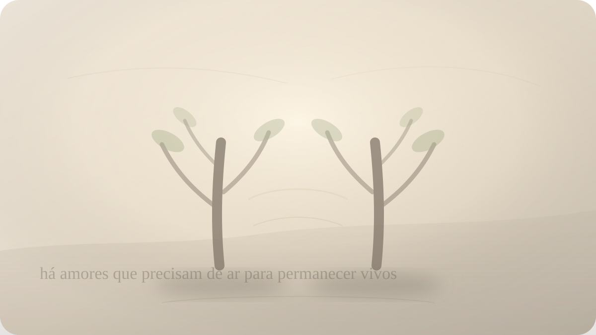

Amor
Amar é possuir ou permitir distância?
Khalil Gibran e a difícil arte de permanecer junto sem transformar o outro em propriedade.

Há amores que começam como encontro e, aos poucos, tornam-se território. A pessoa chega como mistério, presença, alegria, descoberta. Depois, quase sem perceber, começamos a cercá-la com expectativas: responda assim, permaneça assim, deseje do mesmo modo, não mude, não se afaste, não exista demais fora de mim. O amor, que parecia abertura, começa a falar a língua da posse.
Essa transformação raramente se apresenta como dominação explícita. Ela costuma aparecer disfarçada de cuidado. Quero saber onde você está porque me importo. Quero que pense como eu porque somos um casal. Quero que suas escolhas passem por mim porque construímos algo juntos. Quero que você prove, repetidamente, que ainda me escolhe. O controle entra pela porta da preocupação e senta-se à mesa como se fosse intimidade.
Khalil Gibran, em O Profeta, escreveu algumas das páginas mais lembradas sobre amor e casamento justamente porque recusou a fusão como ideal supremo. Ele não romantiza a distância fria, nem defende uma independência indiferente. Mas insiste que a união madura precisa de espaço. Duas pessoas podem cantar juntas sem se tornarem a mesma corda. Podem compartilhar pão sem deixar de ter fome própria. Podem amar sem entregar uma à outra a custódia da própria alma.
A pergunta deste ensaio nasce daí: amar é possuir ou permitir distância?
A resposta parece óbvia quando formulada de modo abstrato. Ninguém gosta de admitir desejo de posse. Quase todos preferimos dizer que amamos com liberdade, que respeitamos o outro, que não queremos prender ninguém. Mas a verdade afetiva aparece menos nas declarações e mais nos pequenos gestos: como reagimos quando o outro deseja algo que não nos inclui? Quando precisa de silêncio? Quando cresce em uma direção que nos assusta? Quando não corresponde exatamente à imagem que nos tranquilizava?
Gibran percebe que o amor não é conforto obediente. No capítulo sobre o amor, ele o apresenta como uma força que chama, fere, desfaz cascas, conduz a lugares altos e difíceis. O amor não aparece ali como anestesia sentimental. Ele transforma. E toda transformação ameaça a parte de nós que queria apenas ser confirmada.
É por isso que a posse seduz. Possuir parece proteger contra a transformação. Se o outro me pertence, talvez eu possa reduzir a incerteza. Se controlo seus movimentos, talvez eu não seja surpreendido. Se sei tudo, se defino tudo, se participo de tudo, talvez a perda não consiga entrar.
Mas a posse mata justamente aquilo que tenta preservar. Uma pessoa possuída deixa de aparecer como pessoa e passa a funcionar como garantia psicológica. O amado vira remédio contra abandono, espelho de autoestima, prova de valor, objeto de segurança. O outro continua ali, mas sua alteridade foi confiscada.
Gibran propõe outra imagem. O amor como espaço entre margens, como movimento, como proximidade que não elimina distância. Essa visão é incômoda porque exige suportar que a pessoa amada tenha interioridade própria. Ela não existe apenas como resposta à nossa carência. Tem medos que não nos pertencem, desejos que não nascem de nós, silêncios que não são ofensa, caminhos que não cabem totalmente na nossa mão.
Permitir distância não significa desinteresse. Essa confusão é frequente. Pessoas feridas por abandono podem ouvir a palavra espaço como ameaça. A distância madura não é sumiço, negligência, indiferença ou fuga de responsabilidade. Não é usar liberdade como desculpa para não cuidar. Não é manter o outro inseguro para preservar poder.
A distância de que Gibran fala é outra: é o intervalo necessário para que duas pessoas continuem sendo duas. Sem esse intervalo, o amor vira fusão; e a fusão, cedo ou tarde, cobra seu preço. Um se apaga para caber no outro. Ou um domina para não sentir medo. Ou ambos confundem simbiose com profundidade.
Há casais que chamam de intimidade a incapacidade de suportar diferenças. Tudo precisa ser compartilhado, explicado, autorizado, validado. Cada silêncio vira suspeita. Cada desejo individual vira ameaça. Cada amizade externa vira concorrência. A relação torna-se uma casa sem janelas: cheia de proximidade, mas sem ar.
Gibran abre janelas nessa casa. Ele sugere que o amor precisa de vento entre as pessoas. Vento não é separação absoluta; é circulação. É o que impede que a união apodreça em posse. O espaço permite que cada um respire, cresça, pense, deseje, volte. Sem possibilidade de volta, ficar perde parte do sentido. Só escolhe permanecer quem poderia, em algum nível, não permanecer.
Essa ideia assusta porque toca o núcleo do apego. Queremos ser escolhidos, mas tememos a liberdade da escolha. Queremos que o outro fique por amor, mas muitas vezes preferiríamos uma garantia que dispensasse a vulnerabilidade. Só que amor sem vulnerabilidade costuma ser contrato de controle.
Amar alguém livre é aceitar que a presença dele nunca será propriedade definitiva. Hoje ele está. Hoje escolhe. Hoje cuida. Hoje partilha. Mas não há posse ontológica sobre outra pessoa. Mesmo dentro de casamento, compromisso, família, história e promessa, o outro permanece vida viva, não objeto arquivado.
Isso não enfraquece o compromisso. Pelo contrário, pode torná-lo mais verdadeiro. Compromisso não é possuir o futuro do outro; é renovar responsabilidade no presente. É criar condições para que a presença não seja prisão. É dizer: quero construir com você sem reduzir você ao papel que cumpre na minha insegurança.
Essa distinção é essencial. O amor maduro estabelece acordos, limites, lealdades, cuidado concreto. Ele não é uma liberdade vaga em que tudo vale. Mas seus acordos não existem para apagar a pessoa. Existem para proteger uma relação onde duas vidas possam florescer sem que uma devore a outra.
Gibran também toca a dimensão espiritual do amor. Para ele, amar não é apenas sentir algo por alguém; é ser atravessado por uma força que nos amplia e nos desnuda. Por isso o amor verdadeiro não serve apenas para satisfazer desejo. Ele revela egoísmo, medo, carência, vaidade, necessidade de controle. Ele mostra onde ainda confundimos proximidade com posse.
Quando alguém diz “você é meu”, pode haver ternura na expressão. A linguagem afetiva usa possessivos como abrigo simbólico. O problema começa quando a metáfora vira política da relação. Quando “meu amor” deixa de significar carinho e passa a significar autorização de domínio. Quando a pessoa deixa de ser amada e passa a ser administrada.
A posse também se alimenta da fantasia de completude. Acreditamos que alguém pode finalmente preencher tudo: solidão, medo, propósito, autoestima, futuro, corpo, história. Mas nenhum ser humano suporta ser colocado no lugar de totalidade. O outro pode nos acompanhar, iluminar, curar partes, provocar crescimento, dar alegria. Não pode viver por nós.
Quando exigimos isso, o amor fica pesado demais. Começamos a punir o outro por não cumprir uma função impossível. Cobramos dele a paz que não cultivamos, a identidade que não construímos, a segurança que nenhuma relação pode garantir plenamente. E chamamos essa cobrança de intensidade.
Permitir distância é devolver ao amor seu tamanho humano. O outro não precisa ser tudo para ser precioso. Não precisa ocupar todos os espaços para ser presença real. Não precisa eliminar a sua solidão para ser companhia. Não precisa concordar com tudo para estar ao seu lado. Não precisa ser imóvel para ser fiel.
Isso vale também para a saudade. Às vezes queremos possuir até aquilo que já passou. Uma fase da relação, uma versão da pessoa, um modo de amar que existiu e mudou. Sofremos não apenas porque o presente é diferente, mas porque tentamos obrigá-lo a representar o passado. O amor maduro precisa aprender a reconhecer mudanças sem transformar cada mudança em traição.
Há uma coragem nessa aprendizagem. Amar com espaço exige autoestima suficiente para não controlar, humildade suficiente para não se tornar centro absoluto, confiança suficiente para não interrogar cada silêncio como ameaça. Exige também discernimento: saber quando a distância é saudável e quando é abandono disfarçado. Nem todo afastamento é liberdade; alguns são negligência. Nem toda proximidade é posse; algumas são cuidado.
Por isso a pergunta não pode ser respondida por regra simples. Cada relação tem sua medida. O que para um casal é sufocamento, para outro pode ser cuidado necessário. O que para uma pessoa é espaço, para outra pode ser fuga. A sabedoria está em examinar a qualidade do vínculo: ele expande ou diminui? Ele permite verdade ou exige performance? Ele acolhe diferenças ou pune qualquer autonomia?
Gibran nos ajuda porque oferece uma imagem, não um manual. Dois seres próximos, mas não colados. Uma união onde circula ar. Uma música em que as cordas vibram juntas sem perder sua separação. O amor como campo vivo, não como jaula bonita.
Talvez amar seja justamente isso: desejar presença sem transformar presença em cárcere. Aproximar-se sem confiscar. Cuidar sem administrar a alma alheia. Pertencer afetivamente sem possuir existencialmente.
No fim, a pergunta que Gibran nos deixa é menos romântica do que parece: se você ama alguém, consegue permitir que essa pessoa continue sendo uma vida, e não apenas uma resposta para o seu medo?
Pergunta final
Se você ama alguém, consegue permitir que essa pessoa continue sendo uma vida, e não apenas uma resposta para o seu medo?
Fontes e leituras
- GIBRAN, Khalil. O Profeta. Capítulos “Do Amor” e “Do Casamento”. Publicado originalmente em 1923.
- Project Gutenberg. The Prophet, by Kahlil Gibran.
- Poetry Foundation. On Love, by Kahlil Gibran.
- Poetry Foundation. On Marriage, by Kahlil Gibran.
- Academy of American Poets. On Marriage, by Kahlil Gibran.
- The Marginalian. Kahlil Gibran on the difficult balance of intimacy and independence.
Leituras relacionadas
E você, o que está sentindo agora?
Escolha seu momento e encontre uma reflexão filosófica para atravessá-lo com mais clareza.
Encontrar uma reflexão